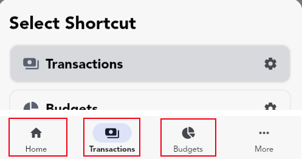
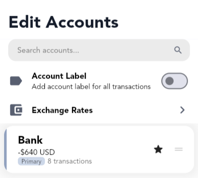
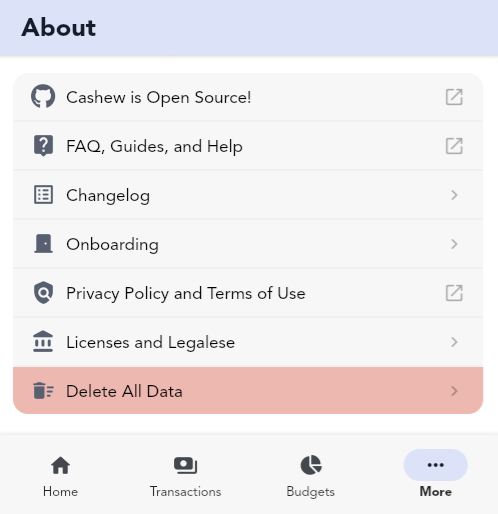

Cashew FAQ
FAQ
Share Data with Partner/Other User
To sync data and share data with multiple users, you need to share a Google account. This ensures privacy when sharing financial data. Since Cashew supports syncing of data with a Google account, a shared Google account will share data between multiple Cashew apps that use the same account.
- Share a Google account with the users you want to sync with.
- Use the syncing feature in the app to keep data up-to-date across all users.
Currently, Cashew does not support other methods of syncing due to privacy concerns and the complexity involved. Maintaining servers for this purpose is expensive and outside the scope of this app.
Syncing Troubleshooting
If you're experiencing syncing issues between devices; consider the following:
Make sure you are logged in to Google Drive with the same account on all devices. Also ensure syncing between devices is enabled. Head to More, Account, login if needed, and tap the Sync/Devices button. Here, Sync Data can be toggled.

Syncing involves two steps: upload and download. Both steps must occur for changes to reflect across platforms. This allows you to safely sync using your personal Google Drive, eliminating the need for a centralized server and ensuring your data is not shared with us or any third party.
You can force a sync by:
- Swiping down on the homepage
- Launching the app fresh, if the user was previously logged in
Each device needs to upload changes before they can be downloaded to another device. Therefore, you will need to first sync from one device to upload changes, and then sync on the target to download changes.
Note: auto login is not supported on the web app. This is a limitation imposed by Google. You will need to be sign-in manually each time to ensure syncing is properly executed.
Reset Syncing
Race conditions can occur and data can becomes out of sync between platforms. Cashew tries its best to ensure it updates data using the latest modified time and propagates changes across platforms. In the case where 2 (or more) devices are out of sync, you can force reset one by restoring a backup and removing all active sync devices.
First, create a backup (using the provided cloud backup service or local backups) on the device with the correct data and restore it (via the cloud or using a local backup). Now, open the Sync/Devices page in More, Account and delete all device sync backups. This will ensure that after restoring a backup, a sync will not occur using old out-dated data. On the out-of-sync target device, restore the cloud (or local) backup. This will ensure all data is exactly the same on both devices.
Note: Restoring a backup will always overwrite all current data on target device. Before overwriting data, it is always recommended to keep an extra backup.
Prevent Resyncing When Restoring a Backup
To prevent data from being downloaded and synced right after a backup is restored (cloud or local): open the Sync/Devices page in More, Account and delete all device sync backups. This will ensure that after restoring a backup, data updated from other platforms will not be restored. After this had been completed, the backup can be restored.

Tracking Credit Card Spending
Tracking Credit Spending
Create a separate account specifically for tracking credit card spending. Every time you make a purchase using that credit card, you would add a transaction to that account. You can transfer amounts between accounts to add credit card payments or apply a balance correction.
Credit Card Statement
In the "Account Details" page (tapping the account twice on the homepage account switcher sections), set the cycle time range for reports to reflect the spending from your credit card statement.
Utilize the "All Spending" page to view past spending ranges associated with your credit card account. You can apply filters to only select that account.
Credit Card Budget
Create a new budget with a set limit, and set the account to the respective credit card account. You can set the start date to the date of your statement so that the totals within the budget history will match that of your statement. Pay attention to the set period dates - this will repeat automatically for the set time range.
Transferring Funds Between Accounts
Note: you will need more than one account created within Cashew
Creating a Transfer
When there is more than one account created within Cashew, Cashew allows you to transfer funds. There are three primary ways of opening the transfer popup:
- A new Transfer tab will appear when creating a new transaction
- Long pressing the (+) button will allow you to transfer funds
- Editing an account will allow you to transfer funds
Repetitive Transfers
You can create a repetitive transfer by first adding a transfer transaction, then editing it to a 'repetitive' or 'upcoming' transaction type. Cashew will prompt you to change both transfer transactions and the transfer will behave as such.
Future Repetitive Transactions and Automatic Payments
The next repetitive transaction in the sequence will show up when you mark the current transaction (either as Paid or Skipped).
By default, overdue transactions (when the current date is past the set transactions date) are automatically paid. You can change this behavior by heading to More, Settings & Customization, More Options, Transactions: Auto Pay Transactions. You can press the action button in the transaction entry to mark it as paid immediately. Then it will create the next transaction in the cycle.
To create all future transactions, they will need to be marked as paid. By default they are marked as paid to the current date, not when the transaction is due. This can be changed by heading to More, Settings & Customization, More Options, Transactions: Paid Date set to Transaction Date. Now the upcoming repetitive transaction can be marked as paid and it will maintain its original due date, while creating the next in the sequence. These paid transactions will now count towards account and budget totals since it has been marked as paid.
Transaction Templates
Cashew does not offer transaction templates; however, frequently used transactions can be quickly added using the following methods:
- You can quickly make a copy of common transactions. After long pressing the plus button, you will see a list of commonly used transactions, tapping them will duplicate the transaction. If the amount differs, long press on the chip to customize the amount.
- Selecting (long pressing) a transaction will also allow you to duplicate the transaction (in the selected transaction top app bar). You can then edit the newly created transaction to your liking.
Tip: You can create duplicate transactions set to the current date and time by long pressing the duplicate option.
Tip: When editing the details of a transaction, to quickly set the date of a transaction to the current date and time, long press the date and time edit entry.
Excluding a Transaction Amount
To exclude a transaction amount from all totals but still keep a transaction entry, you can edit the transaction of interest, scroll down and select More Options and toggle Include Amount. This setting is only available for Default transaction types.

Add to a Budget, Goal, or Long-Term Loan Without Affecting Account Balance
To add to a budget, goal, or long-term loan without impacting your account balance, create a separate account dedicated to tracking your budget, goal, or long-term loan contribution transactions. Transactions added to this account will not affect other account balances. Once you create a transaction added to this extra account, you can organize it into your budget, goal or long-term loan of your choice.
Archiving Budgets, Goals, and Long-Term Loans
To archive a budget, goal, or long-term loan you need to visit the edit data page for each. To visit the edit data page head to More, Budgets/Goals/Loans and tapping the 'Pencil' icon in the top right if needed. To archive a budget/goal/long-term loan you can toggle the 'eye' icon. This will make the archived item always listed at the end of lists during selections and fade out the option.
To remove a pinned budget, goal, or long-term loan on the homepage, you will need to edit the home page section separately.


Splitting a Transaction Across Multiple Categories
Cashew prioritizes efficient and straightforward transaction logging. If you need to divide a transaction among various categories, you can create separate transactions for each detail, enabling you to tailor your level of detail while maintaining a simple interface for all. Although it doesn't natively support splitting transactions across multiple categories, you have the freedom to log your spending as you see fit by adding individual transactions for each detail you wish to track.
Upgrading to Cashew Pro Lifetime from a Subscription
To upgrade to Cashew Pro Lifetime from a subscription you will need to cancel your current subscription. Once the term ends, you will be able to purchase Cashew Pro Lifetime; or any other subscription option. This is to ensure each user gets the full term of Cashew Pro they have paid for.
Using Cashew Pro on Multiple Devices and Restoring Purchases
Each platform operates with its own billing system (iOS and Android), therefore it would need to be purchased separately on each platform. Every purchase of Cashew Pro supports the app's development.
A purchased Cashew Pro license can be shared between any number of devices using the same Apple ID Account through the App Store on iOS or can be shared between any number of devices using the same Google account through the Play Store on Android. A Cashew Pro license is linked to the account used on the Google Play or App Store, not to the account used within Cashew - keep this in mind if you are trying to restore a license purchase.
The web app does not support Cashew Pro.
Troubleshooting Restoring License Purchases on Android
A Cashew Pro license is linked to the Google Account used on the Google Play Store when the purchase was made. It is not necessarily related to the account used in the Cashew app. When restoring a purchase on a different device, please make sure you are logged into the same Google account in the Play Store that the purchase was made on for both devices and it is set as the primary account (the first account) on the Google Play Store.
Within the application you can tap 'restore purchases' to ping Google Services about your purchase. Again, ensure you are signed in to the correct Google Account on the Play Store and it is selected as your primary account on the Google Play Store, not within Cashew. The account within Cashew does not impact the restoring of a license purchase - it is only related to cloud backups. You may need to contact Google Play support to inquire about your purchase if it was not successfully processed.
Pro Tips
Customizing Bottom Navigation Bar Pages
To customize the navigation tabs, long press each one to select the page of preference. You cannot change the last tab.
Note: You can only customize tabs while in mobile layout. When in fullscreen/landscape the side navigation menu cannot be customized.
Duplicating a Transaction to the Current Date and Time
When a transaction is selected you can duplicate the transaction (in the selected transaction top app bar). To duplicate the transactions to the current date and time, you can long press the duplicate option.
You can also quickly make a copy of common transactions by long pressing the plus button. You will see a list of commonly used transactions, tapping them will duplicate the transaction. If the amount differs, long press on the chip to customize the amount.
Long Press the (+) Button
After long pressing the (+) button in the bottom right corner on most pages, you will be presented with more options to 'Add' things apart from the default transaction.

In the popup, you can easily create transfers between accounts or correct an accounts balance under the "Accounts" section. You can quickly duplicate common transactions by tapping the respective transaction chip under "Transactions". There are many other actions that can be performed in this menu.

Long Pressing to Edit
Most UI elements can be 'long pressed' (a press and hold) to edit or perform an extra action. For example, long pressing a category when selecting one during a 'Select Category' popup, will allow you to edit that category.
Copy and Paste Amounts
Most amounts within Cashew can be 'long pressed' (a press and hold) to copy the amount. When adding a transaction or entering an amount, you can long press to 'copy' or 'paste' amounts from your clipboard.

App Links: Create Transactions Automatically
To create transactions automatically, you can use the App Links API. The full documentation can be found here: https://github.com/jameskokoska/Cashew?tab=readme-ov-file#app-links.
Guides
What is an Account?
An account represents a place where money is stored or spent from (e.g., bank, cash, credit card, savings). All transactions are saved against a single account, and reports/budgets roll up from those account balances. When you need to move money between accounts, use a transfer - see Transferring Funds Between Accounts.
Primary Account & App Currency
The selected account on the homepage, or the starred account on the "Edit Accounts" list page is the Primary Account.
The Primary Account determines:
- The default account selected when creating new transactions.
- The primary currency - totals and reports are shown in this currency.
- The target currency for conversions from other accounts. Amounts of different currencies will be converted to the Primary Account's currency for calculating totals.

To change the app's primary currency, edit the Primary Account and choose a currency. The Primary Account's becomes the application's display currency.
Multiple Currencies
Each account has one currency. Cashew converts all account balances and totals to the Primary Account's currency for summaries and reports. Cashew offers a convenient way to convert other currencies amounts to the Primary Account's currency - see Using Multiple Currencies.
When entering an amount, you can tap the currency conversion button to convert from the selected account into the primary currency in one step. You can also set custom rates in More, Accounts, Exchange Rates - see Custom Currencies.
Decimal Precision
Decimal precision controls how many digits you can enter after the decimal point for a given account. The setting is per account and applies when adding or editing transactions in that account. For example: a decimal precision of 5 allows amounts of "1.23456" or "1.234". A decimal precision of 2 allows for amounts of "1.23" or "1.20" or "1.00". A decimal precision of 0 only allows for whole numbers, such as "1" or "2". When displayed, amounts will be rounded to the chosen decimal precision.
Transfers Between Accounts
Use a Transfer to move money between two accounts. Cashew creates a paired set of transactions and excludes them from income/expense totals, keeping reports and account totals accurate . Learn how to create transfers in Transferring Funds Between Accounts.
Tracking Credit Card Accounts
Create a dedicated account per credit card and log purchases to that account. "Pay" the credit card via transfers from your funding account. For the full guide: Tracking Credit Card Spending.
Balance Corrections & Account Totals
If an account's starting balance or running total needs adjustment, use a Balance Correction. This special category affects account totals without counting as income or expense, and is also used behind the scenes for transfers. Read about Balance Corrections: Balance Correction.
Net Worth Account Selection
Choose which accounts are included in the homepage Net Worth (and the time range) by long-pressing the Net Worth section or via Edit Home. See Net Worth Account Selection.
Creating, Editing, Archiving, and Managing Accounts
To create and edit accounts, go to More, Accounts. Here you can set the Primary Account. Each account has a color, currency, and decimal precision. You can Merge Accounts together in the Edit Account page - which transfers the transactions of one account into another.
What are Categories?
Categories organize your transactions. Every transaction requires a category.
Categories drive reports and budgets by grouping related spending and income. You can use categories to your advantage to set budgets for specific categories - see Category Spending Goals
Income and Expense Categories
When you create a category, you assign it a default Income or Expense. This default is applied automatically when you select the category while adding a transaction. However, after selecting a category when creating a transaction, it can be switched to any Income/Expense type.
For example:
- You can use a "Work" category for work income and work expenses
- "Bills & Fees" can include both expenses and earned money
Subcategories & Organization
Every category can have subcategories for further categorization. You can create a subcategory for a main category on the Edit Category page.
Special Case: Balance Correction
The Balance Correction category is a special category used by transfers and manual balance fixes. It affects account totals without being counted as income/expense in reports - see Balance Correction.
Creating, Editing, Archiving, and Managing Categories
To create and edit categories, go to More, Categories. Here, you can create new categories, change the order or edit a specific category. You can Merge Categories together in the Edit Category page - which transfers the transactions of one category into another. You can create a subcategory for a main category on the Edit Category page. You can also convert an existing main category into a subcategory from the Edit Category page.
What is a Budget?
A budget is a financial plan that outlines expected income or expenses over a specific period of time. It helps manage money by setting limits on spending, tracking financial goals, and ensuring that resources are used effectively. It allows the balance of what comes in with what goes out. Tracking finances over a period of time and analyzing the insights can produce a clearer understanding of spending habits, highlight areas for saving, and support smarter financial decision-making.
Cashew is a budget tracking application after all, so let's take a deep dive into learning how to create and manage a budget within Cashew in detail.
Creating a Budget
To create a budget, first open the Budgets page. Head to More, Budgets, and tap the (+) button.

Budget Types
There are two types of budgets in Cashew: Added Only budget and an All Transactions budget. This cannot be changed after the budget is created. However, you can create multiple budgets within Cashew.
Added Only Budget:
- Only the transactions you add
- Useful for one-time budgets with custom time periods
- Example: 'Vacation' budget
All Transactions Budget:
- All transactions that satisfy the set categories and filters will automatically be included
- Useful for long-term budgets over multiple periods
- Example: 'Monthly Spending' budget
General Budget Parameters
You can select if you want to budget for savings (positive cash flow, such as income) or budget for negative cash flow, such as expenses. Each budget has a name, color, amount, and the start day and period.
Cycles and Time Periods
The cycle of a budget will always reset and past budget periods can be viewed. If you want a monthly repetitive budget to start on the 21st of the month, select any date with the day of the 21 (e.g., September 21) and [ / 1 month ] as the time frame. Cashew will show you the current period based on the current date from the start date you set.
To set a custom time period for a budget, change the time frame from the default [ month] to [ custom ]. Custom time periods do not repeat.

To set the period, you can choose a custom budget period (a time range between 2 dates) or an automatically recurring cycle, such as every 2 weeks, or every month.
"All Transactions" Budget Filters
For an all transactions budget, you can select the transactions to automatically include. For example, if you would like to include income in an expense budget (which will decrease the total spend, since the opposite polarity of transactions are included), you can select Income under Transactions to Include. Tap the (i) to read about each Transactions to Include filter. You can also select which categories to include or exclude from an all transactions budget.
Excluding Transactions From "All Transactions" Budget
Each transaction can also be manually excluded from an all transactions budget. To do this, edit the transaction of interest, scroll down, tap More Options, and select the budget you would like to exclude this transaction from.
Setting Up Category Spending Goals
Once you create a budget, you can set up smaller 'sub-budgets' or, as Cashew calls them, Category Spending Goals to break down your spending for each category within an overall budget.
To add category spending goals, edit the budget and tap Set Category Spending Goals. Here you can set a percentage goal (percentage of the budget total) for each category or an absolute spending goal (actual amount of money). You can also apply these goals to subcategories and main categories. By long-pressing a category entry in the budget spending overview page below the pie chart, you can quickly modify the category spending goal to suit your spending needs.

Reading a Budget Graph
Cashew adds useful indicators to help you track your spending trajectory. Within a budget spending breakdown, you will see a line graph showing the amount spent versus date through the budget period.
A dashed line is drawn on the current date and the average amount spent per day up to the current day. The intersection indicates where your spending should be at that given time for a budget to stay on track.

Viewing Past Budget Periods
You can tap the history icon to see past budget period breakdowns. You can only view the history of non-custom period budgets.


Creating, Editing, Archiving, and Managing Budgets
To create and edit budgets, go to More, Budgets. Here, you can create new budgets, change the order, edit a specific budget or archive a budget. When budgets are completed or no longer needed, they can be "archived" - see archiving.
What is a Goal?
A goal tracks progress toward a target amount (saving up or paying down). You add contributions as transactions, and Cashew totals the cash flow assigned to that goal to show how close you are to the target.
How Goal Progress Is Calculated
Goal progress is the sum of transactions assigned to the goal compared against its target amount. Assign any transaction to a goal when creating or editing it. You can contribute from any account; totals are converted to the app's Primary Account's currency for consistency - see Primary Account for more information.
Savings And Expense Goals
Choose a goal type that matches the direction of cash flow you're tracking:
- Income Goal - Positive cash flow toward a target you're accumulating (e.g., Emergency Fund, Vacation). Contributions are income transactions increase progress toward the target.
- Expense Goal - Negative cash flow toward reducing something you owe (e.g., Paying down a balance or planned outlay). Contributions are expense transactions and increase progress toward the target.
Contributing to a Goal
When adding or editing a transaction, assign it to the goal by selecting the goal in the Add/Edit Transaction page.
Automate recurring contributions with repetitive/upcoming transactions - see Future Repetitive Transactions and Automatic Payments.
Tracking Without Affecting Main Account Balances
If you want goal contributions to not change your everyday account balances, create a dedicated separate "tracking" account and post goal-contribution transactions there. This keeps operational balances untouched while still recording goal progress. See: Add to a Goal Without Affecting Account Balance.
Transfer transactions can also be added to goals. Pair goals with transfers to reflect real money movements between funding and destination accounts.
Creating, Editing, Archiving, and Managing Goals
To create and edit goals, go to More, Goals. Here, you can create new goals, change the order, edit a specific goals or archive a goals. When goals are completed or no longer needed, they can be "archived" - see archiving.
Loans help you track when money is lent or borrowed and therefore track owed money. There are 2 types of loans in Cashew. One-time loans and long-term loans. Loans can be managed on the More, Loans page within Cashew.
One-Time Loans
One-time loans are set by changing the transaction type. These loan transactions can only be collected to the same account. A "lent" transaction is a negative cash flow until marked as "collected". This emulates receiving money (positive) until marked as collected, resulting in a net 0. A "borrowed" transaction is positive cash flow until marked as "settled". This emulates giving out money (negative) until marked as settled/received, resulting in a net 0.
Long-Term Loans
Long-term loans are more complicated than one-time loans, but support collection/settlement with different accounts across multiple transactions. Essentially, a long-term loan is a collection of transactions, displaying the difference. Long-term loan totals can change dynamically. When the net is 0 of all transactions included in a long-term loan, it is considered "settled/collected/paid off". Add transactions to a long-term loan to keep track of the loan total and payments.
Since a long-term loan is a collection of transactions, each transaction can belong to a different account - therefore supporting collections/settlements with different accounts.
To increase the long-term loan amount, add a transaction of the same polarity. For "Lent" loans, increase the loan amount by adding a "Paid" (negative) transaction. For "Borrowed" loans, increase the loan amount by adding a "Collected" (positive) transaction.
To add progress towards a loan, add a transaction with the opposite polarity. For "Lent" loans, decrease the loan amount by adding a "Collected" (positive) transaction. For "Borrowed" loans, increase the loan amount by adding a "Paid" (negative) transaction.
Example Long-Term Loan
For example, if you create a long-term loan of type "lent" of 50$. This will create the initial lent out "Paid" transaction of amount 50$. Then add a "Collected" transaction manually with amount of 20$. This will result in the net total being 30$ - and therefore 30$ left to be collected, displayed in the interface.
Note that the "Paid" and the "Collected" transaction can be have a different account, allowing you to separate the totals across multiple different accounts.
Say in this example, the long-term loan amount total needs to be increased to 60$ from 50$. Manually add a new "Paid" transaction to this long-term loan of amount 10$ and the total left to collect will increase by 10$. This results in the long-term loan totalling 60$.
If the type of long-term loan is switched to "Borrowed" instead of lent, the opposite polarity of transactions will be used to calculate the total.
Tip: In a long-term loan, you can also change the "Total Offset". The total offset will not count as a transaction, but will add to the total of the loan by some offset set. This is useful if you need to modify the total of the loan without adding a transaction affecting the net totals, for example to increase the loan amount due to interest or other unaccounted for costs modifying the total owed/lent out.
A "balance correction" within Cashew is a powerful special type of transaction. It is a transaction that is not globally categorized by Cashew as Income or Expense. By default, this special category does not exist - to let Cashew create it, edit an account and perform a Transfer or Correct Total Balance.
Once it is created, it can be edited by the user and will still maintain its properties. The balance correction category has the following details:
Uses of the Balance Correction
The balance correction category is primarily used in Cashew for Transfers and Balance Corrections of accounts - since these operations are not directly related to income or expenses. However, this category can manually be used to track refunds/returns/payments etc. - or transactions that would not be otherwise categorized as an income or expense directly.
Balance corrections also allow users to track credit card accounts and payments without affecting incoming or outgoing totals produced by categorized income and expense transactions. See: Tracking Credit Card Spending with Cashew.
Cashew only supports one currency per account. You can change the currency by editing an account.
To change the primary account's currency by heading to More, Accounts; the starred account represents the primary account and selected currency of the application. Cashew will convert all currencies to this account.
However, if you need to enter a different currency with automatic conversion into another account, you can use the currency conversion button when entering an amount.
Make sure the primary account is selected to the currency you want to convert to. Then, select another account when entering an amount, and convert the amount back to the primary account with one tap.
In the example below, 'Bank (USD)' is our primary account, and we want to convert 50 EUR to USD using the conversion rate. We can do this by selecting 'Other (EUR)' and tapping the conversion button.
Using the currency conversion button will allow you to store the converted currency using the conversion rate at the current point in time, and to the target account's currency rate. Therefore if the currency rate changes, the converted amount will not since it has already been converted and stored in the transaction at that point in time.
Custom Currencies
You can customize the currency conversion rates by heading to More, Accounts, Exchange Rates. If a custom currency is not set, exchange rates are used and updated daily from https://github.com/fawazahmed0/exchange-api.
You can import a CSV (Excel) file list of transactions into Cashew. You can import data in Cashew by heading to More, Settings & Customization, and scrolling down to "Import & Export".
To import external data into Cashew from other applications you will need to be able to extract data that can be manipulated into a CSV file Cashew understands. To do this use the provided import templates:
Utilize Provided Templates
Use the provided CSV templates within the app for importing data. You may need to copy your data using Sheets or Excel into the template from an existing CSV file to the respective columns (especially if migrating from another application) to ensure the template format is used. This ensures a unified format that Cashew can understand. Extra information below is provided on specific formatting of certain types of data.

To use the Google Sheet template, please make a copy before adding your transaction data. Follow this guide on how to make a copy of a Google Sheet.
Choose Import Method
You can import data in two ways:
- Using a CSV file locally
- Providing a link to a shared Google Sheet
Note: An import cannot be undone. Make sure to keep a backup of your data to revert an import. See: Cloud and Local Backups
Extra Importing Details and CSV Format
Income / Expenses
When importing income, use a positive amount; for expenses, use a negative amount.
Date Parsing
Cashew will attempt date parsing in various formats, but the official CSV format for dates provided in the templates is recommended for accuracy.
Importing Subcategories
The corresponding subcategories must exist in Cashew before the import occurs. If there is an existing subcategory, Cashew will prioritize that subcategory over creating a default category with that name when importing. Therefore, subcategories can be imported using the 'category' column.
Note: As an alternative, after importing, missing categories will automatically be created as main categories. These main categories can be converted into subcategories: edit the category, and select "Convert Into Subcategory".
Importing Transfer Transactions
To import transfers, your export source (original application) needs to be able to convert transfer transactions into single income/expense transactions. A single transfer would consist of 2 transactions, an outgoing account and incoming account transaction. This would be the universal format. Once this is done, Cashew can import the transactions. These imported transfer transactions should be under one 'category'. Now merge these transactions with Merge Category into the Balance Correction category within Cashew.
Note: the 'Balance Correction' category may not exist. It is automatically created when at least one transfer or balance correction is made within Cashew. So if it is missing, create a transfer or balance correction on an account.
 Home Page Customization
Home Page Customization
Cashew's Home page is fully customizable. Choose which sections to display (graphs, budgets, balances, heatmaps, pie charts, recent transactions, etc.), and control their order and visibility.
To edit the home page, on the Home page, tap the three-dot menu in the upper-right corner.
Tip: You can hide the home page completely by customizing the bottom navigation bar tab pages.
Customizing the Layout & Visibility
On the Edit Home page:
- Reorder: tap-and-hold a section, drag to a new position, then release.
- Show/Hide: toggle the switch for each section.

Section Options
Tap any section on the Edit Home page to configure its settings. Alternatively, long-press a section directly on the Home page to open the same menu.
Net Worth Accounts
To select the accounts included for the Net Worth calculation on the home page: open the Edit Home page, and select the Net Worth section. Here you can select which accounts to be included in the Net Worth calculation and the calculation's time range. By default, all accounts are included.
Statistics Date Range
Most statistic home page sections support a custom date range. On the Edit Home page, tap the section and set its date range.
Primary Account
In account list sections on the Home page, the selected account is the Primary Account. You can quickly switch the Primary Account by selecting it in the account list. This account is the default for new transactions and defines the app's base currency - see Primary Account.
Cashew offers 2 methods of backups: Google Drive Cloud Backups and Local Data File Backups. To create/import backups head to More, Settings & Customization, under the 'Backups' section.
A Cashew backup file is a direct copy of the current app's database. It captures all data at that point in time, containing all budget data, transaction data, application settings etc. The database can be opened with an external SQL viewer tool. Please be advised if the backup file is tampered with, it may not be able to be successfully imported back into Cashew.
Note: Keeping periodic backups keeps your data safe in the case of a corrupted file, accidental deletion, or if you need to restore your information on a new device.
Note: Restoring a backup will always overwrite all current data on target device. Before overwriting data, it is always recommended to keep an extra backup.

Note: Exporting and Importing CSV files as backups is NOT recommended. Cashew does not export all app data nor does it import all app data when using CSV Importing and Exporting. For example, app settings are not exported to the CSV.
Local Backups
To create a local backup, head to More, Settings & Customization, under the 'Backups' section, tap Export Cashew Data File and choose a location to save the backup file. Backups can be restored at any time.
To restore a local backup, head to More, Settings & Customization, under the 'Backups' section, tap Import Cashew Data File and choose the backup file.
Cloud Backups
Cloud backups can be enabled by linking a Google Drive Account to Cashew. To login, go to More and tap Login/Google Drive. Once logged in, you can create a cloud backup, restore a cloud backup, manage device sync data, and manage cloud backup files. Cloud backups can also be downloaded and saved to the device as a local backup to be restored at any time.
Automatic cloud backups are enabled by default and will create periodic backups on login. You must be logged in for Cashew to create these automatic backups.
Note: All cloud backups are stored on your Google Account and the Cashew development team does not have access to any of this information - see Privacy Policy.
Google Drive Permissions
Since cloud backups require Google Drive, you must provide Cashew permission to create and manage its own application data on your Google Drive. If this permission is revoked, you may receive Error 403: Request had insufficient authentication scopes.
For cloud backups, Cashew uses an application data folder inside your Google Drive and does not have access to any other files. The application data folder is a special hidden folder that Cashew uses to store application-specific data and backups.
Accessing Cashew's Google Drive Cloud Data
Any connected app data is not available to be viewed by users using Google Drive directly. This is to ensure app data does not get tampered with and is a limitation imposed by Google. You can only remove all your app data through Google Drive management, not view it. If you need to download a backup stored on your drive, Cashew allows you to download these backups within the app itself.
To delete all data in the app, go to More, About Cashew, and scroll down to find Delete All Data.
This process will prompt you to delete sync data if you do not want it to be restored upon login.
After logging in again, Cashew will attempt to restore sync backups. If you do not want your synced devices to be restored, you will need to delete them. Navigate to the account page, tap on Sync/Devices, and delete the sync backups.
Deleting Cashew's Google Drive Cloud Data
Google Drive is used by Cashew to store sync data and cloud backups. This data is stored and connected to your personal Google account - the Cashew development team does not have access to this data, and therefore it will need to be deleted manually by the user.
To delete all hidden Cashew sync and backup data through Google Drive:
- First note this will delete ALL cloud backups before proceeding.
- Open a web browser (NOT the application or mobile website) and visit https://drive.google.com/drive/u/0/settings while logged in to the Google account you use with Cashew.
- Go to the Manage Apps tab.
- Locate 'Cashew'.
- Click on Options.
- Select Delete hidden app data.
Questions? Feel free to reach out on email: dapperappdeveloper@gmail.com